|
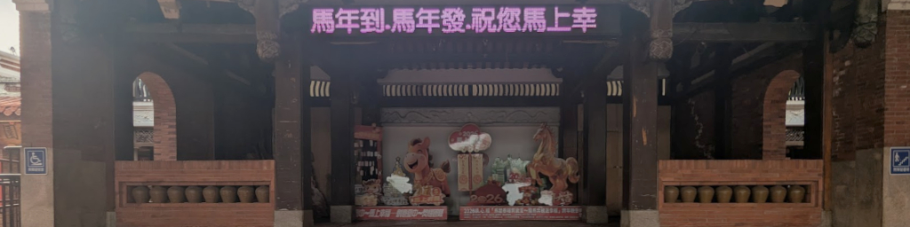 Here are all the page headers I've used on this site, in no special order. They're all cropped from pictures that
appear elsewhere on the website. 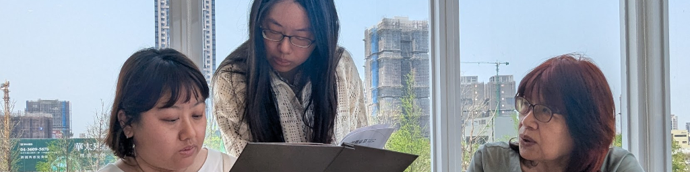 Wenxin, Wenshuang, and Meihui ordering food at the 稻鎮 經典台灣菜 Restaurant. 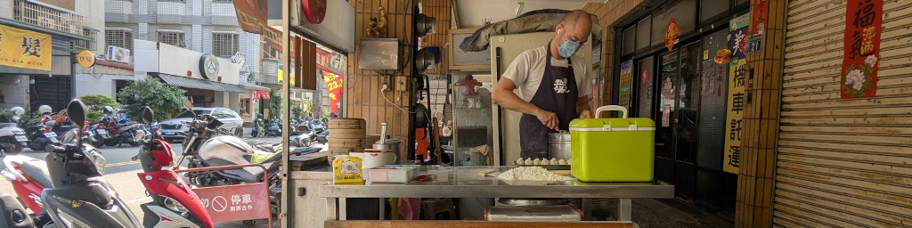 A street vendor making 小籠包. 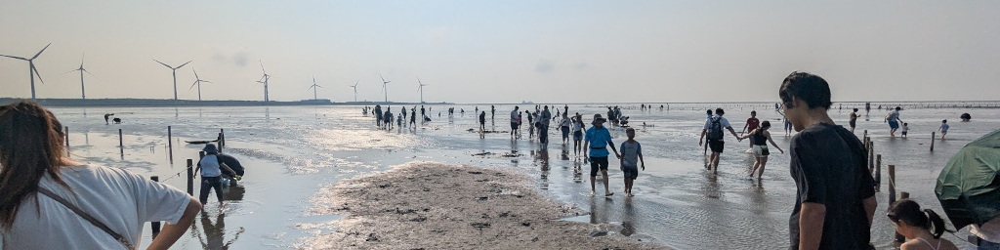 At the 高美濕地 (Gaomei Wetlands).  The 大坑清新橋 （蝴蝶橋） (Hang Fresh Bridge) in Taichung. 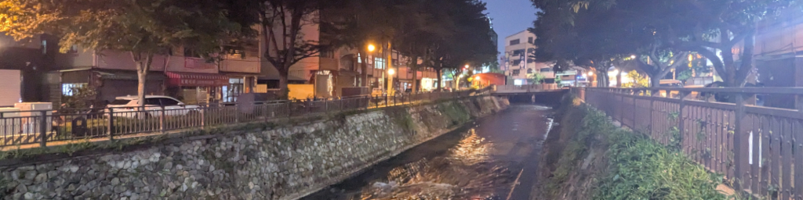 A canal through Taichung.  Taichung from up in the mountains at the 五湖園 Memorial Pagoda. 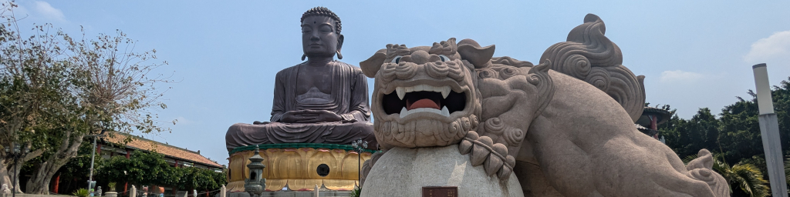 The Big Buddha and a lion guardian at 八卦山 in Changhua. 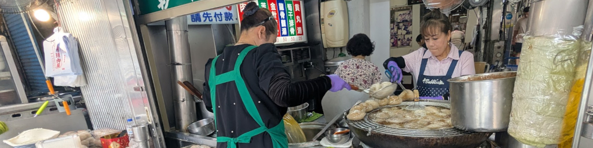 Changhua 肉圓 makers. 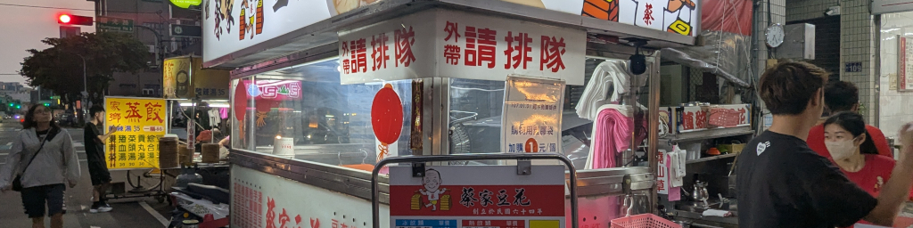 A night market 豆花 vendor. 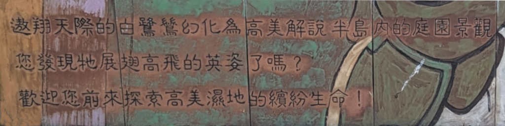 A sign at the 溼地野生動物保護區 (Gaomei Wetland Preservation Area) about "...visiting egrets soaring through the skies..." 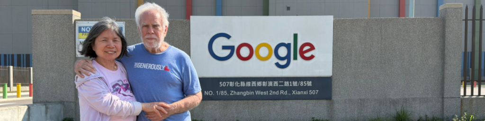 At the Google Data Center in the 彰濱產業園區 (Changhua Coastal Industrial Park). 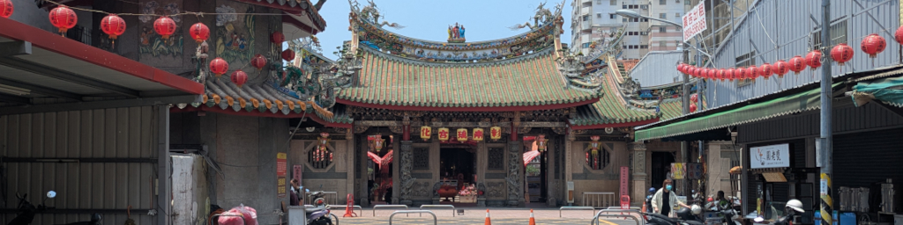 The 彰化南瑤宮 (Changhua Nanyao Temple). 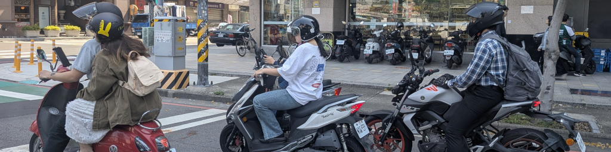 A street scene in Taichung.  Having a snack at the Senior Center 不老夢想125號. 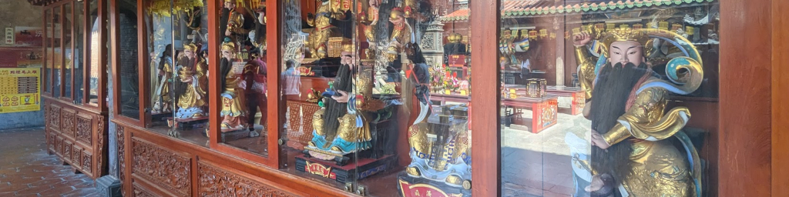 In a 鹿港 temple. 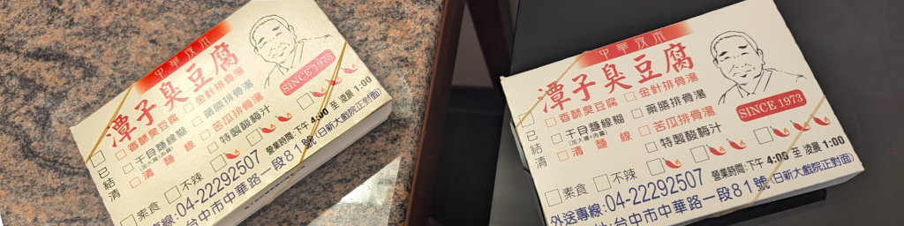 臭豆腐 delivered to our room by Meihui! 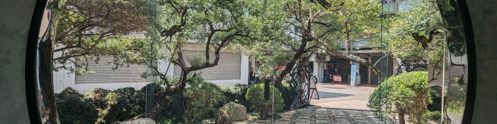 The entrance to one of Meihui's favorite coffee houses (as seen from the inside looking out). 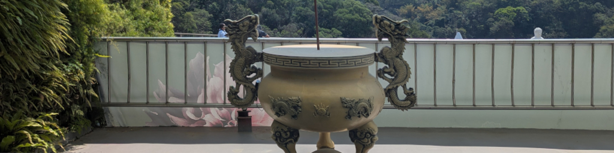 At the 五湖園 Memorial Pagoda. 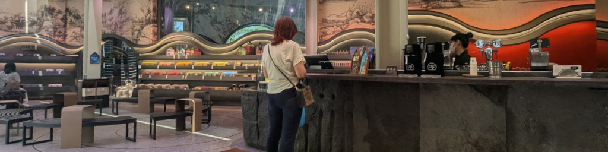 Meihui ordering some coffee at the very cool 櫟社 Coffee House. 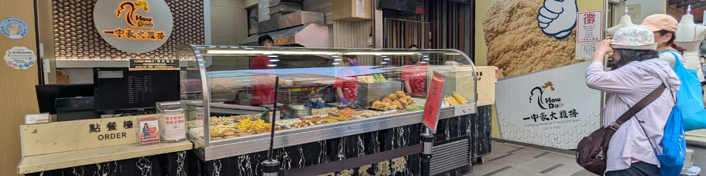 Looking to buy a 大雞排 on 一中街. 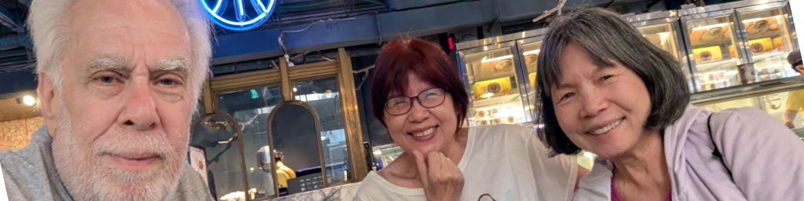 We're having ice cream! 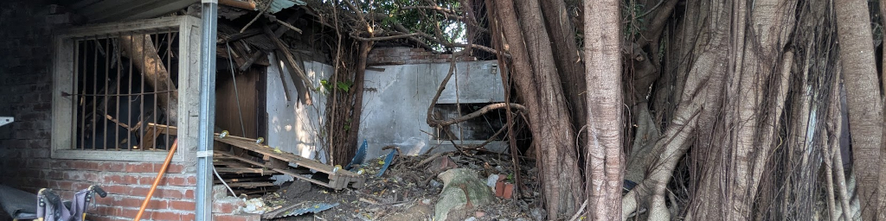 The remains of Mei-O's very old family home, as seen from the back. 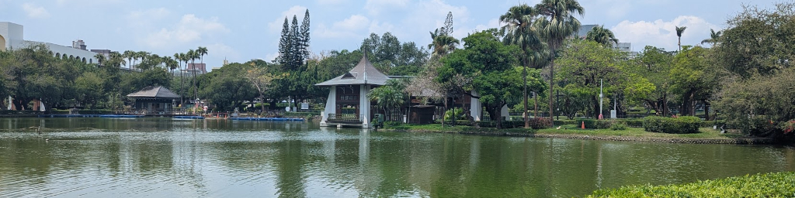 Taichung Park.  The old railway line at 勝興站 (Shengxing Station) in Miaoli. 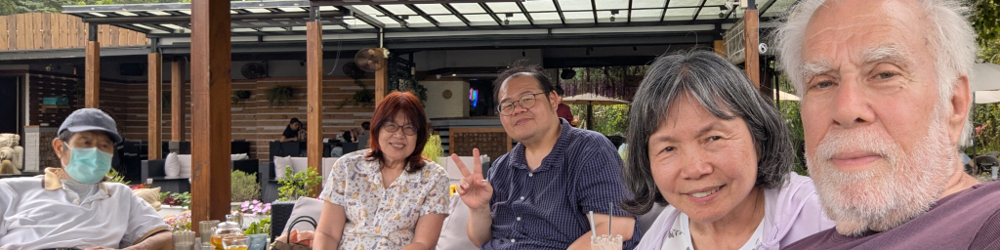 Relaxing (and snacking) at 映象水岸, a small, remote coffee shop/restaurant in the mountains near 三義 (Sanyi). 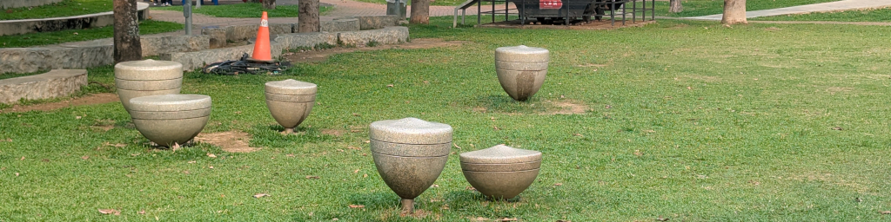 The tops display in 民俗公園. 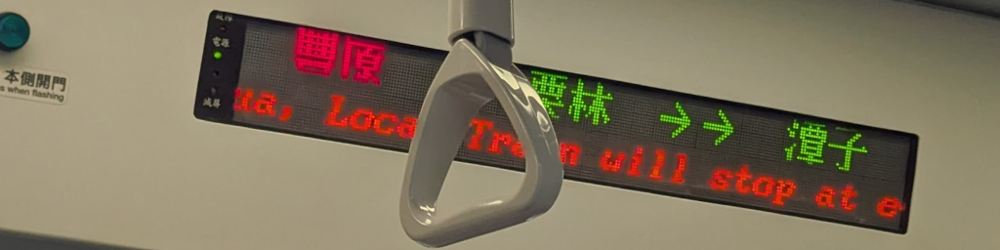 On the train, 豐原 to 栗林 to 谭子. (We'll get off several stops later at 松竹 Station.) 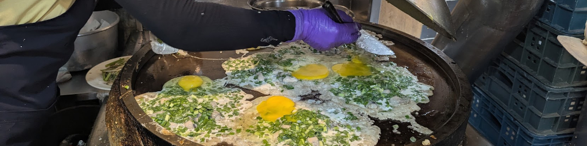 An oyster omelet maker in a 豐原 restaurant. 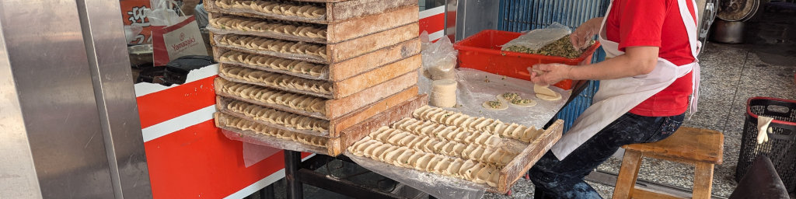 A 水餃 maker at 永和四海豆漿. 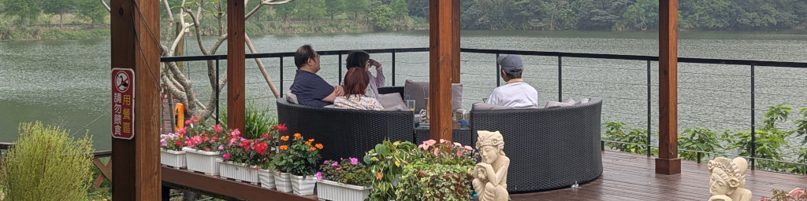 Enjoying some snacks at 映象水岸 on West Lake (西湖) near Sanyi. 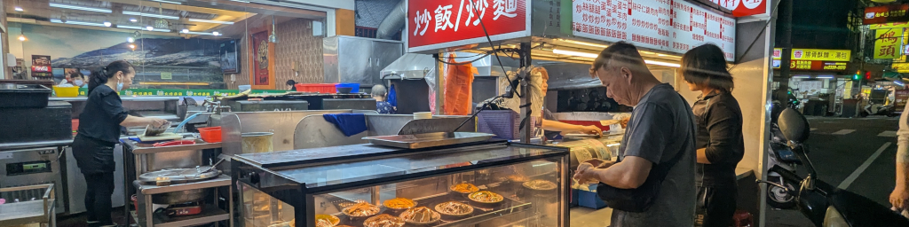 A night market scene. 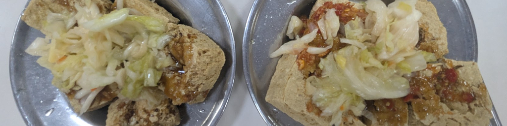 臭豆腐 (stinky doufu). Woo-hoo! 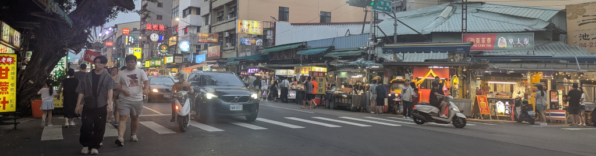 忠孝路觀光夜市, a local street night market. Below are some headers that I created but ended up not using for one reason or another. 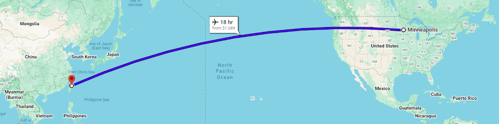 Our overseas route from Minneapolis to Taipei. 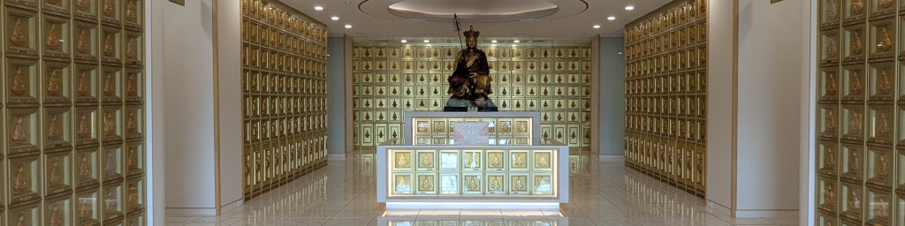 At the 五湖園 (Five Lakes Memorial Pagoda). 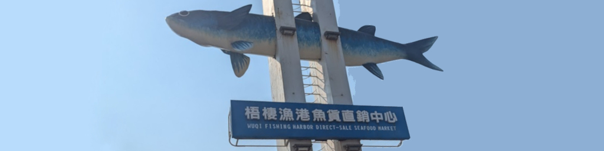 At the 梧棲漁港魚貨直銷中心 (Wuqi Fishing Harbor Direct-sale Seafood Market) at the Port of Taichung. 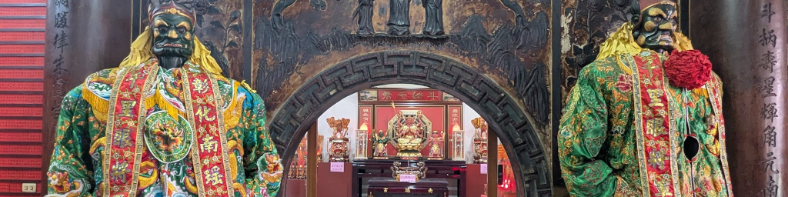 Guardians in the 彰化南瑤宮 (Changhua Nanyao Temple). 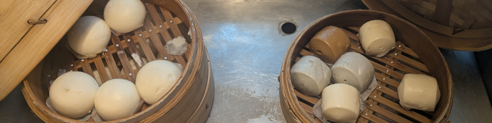 Two of our many daily breakfast options at our Zhong Ke Hotel all-you-can-eat breakfast. 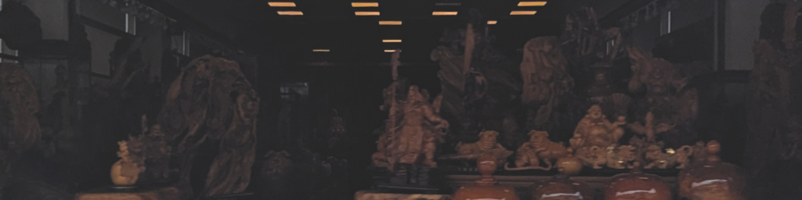 A woodcarving shop in Sanyi (taken from Zhiwei's car as we drove by). 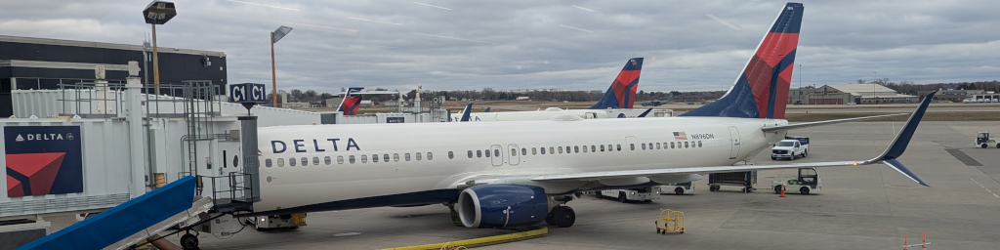 Our Delta Airlines plane from Minneapolis to Seattle. 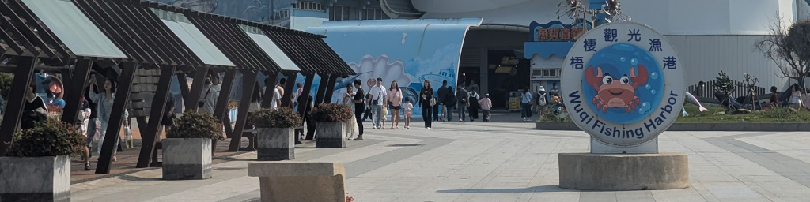 At the 梧棲觀光漁港 (Wuqi Tourist Fishing Harbor) at the Port of Taichung. 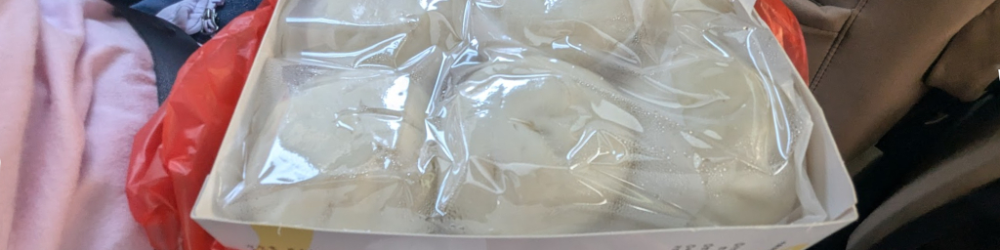 包子 from 鹿港 (Lugang). 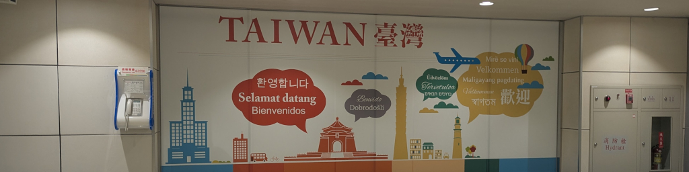 Arriving at the Taoyuan Airport in Taipei. 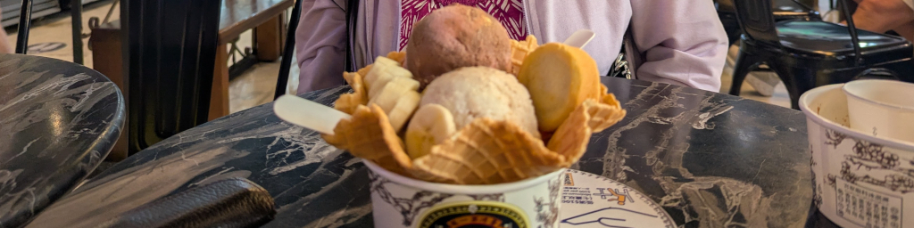 A bowl of ice cream Mei-O and I shared at 台中市第四信用合作社 (popularly known as the Miyahara Restaurant). |